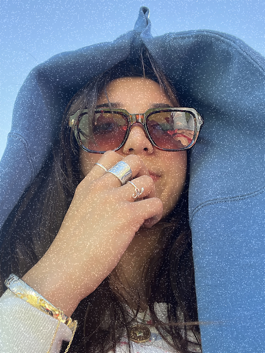

Take a look through some of my design work aswell as some personal projects and other art forms!
I have always been drawn towards floral imagery, soft colors, and organic movement, which comes through in my design work. Nature has always been a big inspiration to me as an artist. The innate beauty of the natural world is something that we, as humans, can only hope to reach in our creative outlets. I enjoy working with different mediums and genres to broaden my audience and expand my creative Horizons./ My goal is to grow my design abilities while continuing to sharpen my professional style.